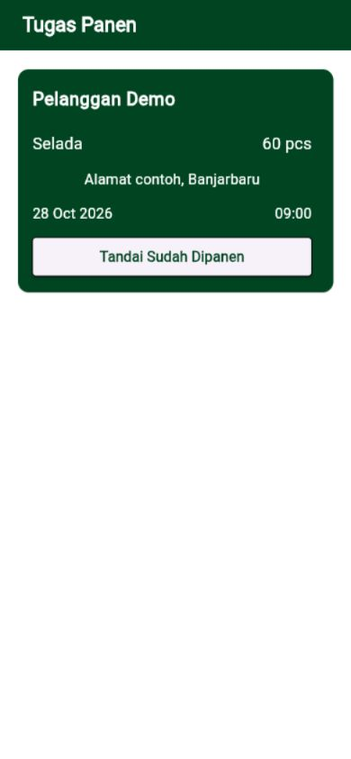

Operasional hidroponik · Aplikasi Flutter
E-Ponic
Dari merawat tanaman sampai mengantar hasil panen. E-Ponic membantu tim kebun hidroponik membagi tugas, mencatat panen, dan menyiapkan pengiriman melalui aplikasi mobile.
- Konteks proyek
- Proyek kelompok mata kuliah Manajemen Proyek TI.
- Untuk siapa
- Petani, tim logistik, kurir, administrator, dan pengelola kebun.
- Kontribusi saya
- Kontribusi pada backend dan aplikasi mobile bersama tim.
Dokumentasi

Beranda petani
Tampilan asli menampilkan ringkasan tanaman dan daftar jadwal perawatan harian untuk petani.

Detail perawatan tanaman
Layar asli memuat tugas, penjelasan, tanggal, waktu, dan interval perawatan yang perlu diikuti.


Tugas panen
Daftar tugas panen berasal dari antarmuka aplikasi yang sebenarnya. Nama pelanggan, alamat, dan jumlah di layar ini khusus untuk demonstrasi.
Mengapa proyek ini dibuat?
Masalahnya
Perawatan kebun dan distribusi hasil melibatkan beberapa peran. Catatan yang terpisah menyulitkan koordinasi antarbagian.
Pendekatannya
Aplikasi membagi tampilan sesuai peran dan menghubungkan jadwal perawatan, status panen, penugasan pengiriman, serta laporan.
Yang bisa dilakukan pengguna
-
Tampilan sesuai peran
Petani, logistik, kurir, admin, dan superadmin memiliki area kerja sesuai tugas.
-
Jadwal perawatan
Pengingat membantu petani mengikuti pekerjaan dan perawatan tanaman.
-
Catatan panen & distribusi
Status hasil panen menjadi informasi bagi tim logistik untuk menyiapkan pengiriman.
-
Laporan dari perangkat
Catatan operasional dapat dirangkum sebagai laporan PDF.
Teknologi
- Flutter / Dart
- Cloud Firestore
- Firebase Auth
- Background Alarm Service
- PDF Reports